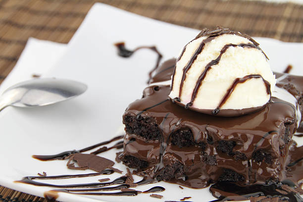

- Heat gently, stirring, until smooth, then remove from the heat to cool slightly.
- Snap the chocolate into pieces, then place in a heavy-based saucepan with the milk.
- Beat the sugar and egg yolks in a bowl until pale and thick. Stir in the cooled chocolate milk, then strain back into the pan.
- Cook the custard over a gentle heat, stirring all the time, until it thickens and coats the back of a wooden spoon. Don’t allow the mixture boil or it will curdle.
- Pour into a bowl and leave to cool, stirring occasionally.
- Once cooled, whip the cream into soft peak
- and fold through the chocolate mixture.
- Churn in an ice cream machine, according to the manufacturer’s instructions, until it’s frozen.
Food recipe here:

Method/Recipe ofIce Cream

Method/Recipe of Burger
- In large bowl, dissolve yeast and sugar in water;
- let stand for 5 minutes. Add oil and salt. Stir in flour, 1 cup at a time, until a soft dough forms.
- Turn onto a floured surface; knead until smooth and elastic, 2-3 minutes.
- Place in a greased bowl, turning once to grease the top.
- Cover and let rise in a warm place until doubled, about 45 minutes. Meanwhile, cook beef and onion over medium heat until beef is no longer pink, breaking meat into crumbles; drain.
- Punch down dough; divide in half. Press each half into a greased 12-in. pizza pan.
- the tomato sauce, oregano and basil; spread over each crust. Top with beef mixture, green pepper and cheese.
- Bake at 400° for 25-30 minutes or until crust is lightly browned.